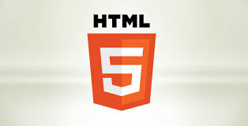

Sejarah
Bahasa pemrograman, atau sering diistilahkan juga dengan bahasa komputer atau bahasa pemrograman komputer, adalah instruksi standar untuk memerintah komputer. Bahasa pemrograman ini merupakan suatu himpunan dari aturan sintaks dan semantik yang dipakai untuk mendefinisikan program komputer. Bahasa ini memungkinkan seorang programmer dapat menentukan secara persis data mana yang akan diolah oleh komputer, bagaimana data ini akan disimpan/diteruskan, dan jenis langkah apa yang akan diambil dalam berbagai situasi secara persis.
tahukah Anda siapa programmer pertama di dunia? Saya yakin hanya sedikit yang tahu. Bahkan jika pertanyaan tersebut dilontarkan kepada mahasiswa yang kuliah di jurusan informatika pun bisa jadi banyak dari mereka yang tidak tahu jawabannya.
Mungkin Anda juga tidak akan pernah menduga sebelumnya kalau orang yang membuat program komputer pertama kali itu ternyata adalah seorang wanita.
Menurut catatan sejarah, program komputer ditulis pertama kali pada tahun 1843 oleh seorang wanita yang bernama Ada Lovelace. Ia dikenal sebagai penulis dan ahli matematika yang terkenal dengan karyanya yang berupa komputer mekanika pertama.
Ada Lovelace merupakan putri tunggal dari penyair terkenal yang bernama Lord Byron. Sejak kecil dia sudah tertarik dengan matematika dan pertemuannya dengan Charles Babbage menjadi awal dari kariernya. Babbage sendiri adalah ahli matematika Inggris yang pertama kali mengemukakan pendapat tentang komputer yang dapat diprogram.
Singkat cerita, Ada Lovelace tertarik dengan program yang saat itu tengah dijalankan oleh Charles Babbage, yakni Difference Engine. Sebaliknya, Babbage juga kagum dengan intelektual dan bakat menulis Ada Lovelace. Babbage bahkan memberikan julukan “The Enchantress of Numbers” pada Ada Lovelace. Keduanya pun lantas menjalin kerjasama
Ada Lovelace kemudian membantu Babbage menulis program komputer untuk mesin ciptaan Babbage yang bernama Analytical Engine. Dalam hal ini, peran besar Ada Lovelace adalah menerjemahkan artikel Luigi Menabrea, seorang ahli matematika Italia.
Ada juga menulis penjelasan awal tentang komputer dan perangkat lunak, serta menambahkan catatan mengenai metode kalkulasi nomor Bernoulli pada mesin yang dikembangkan oleh Babbage tersebut. Karena hal itulah Ada dikenal sebagai programmer komputer pertama di dunia.
Ada Lovelace meninggal dunia pada tanggal 27 November 1852 di usia 36 tahun, yang membuat dia gagal melanjutkan pengembangannya seputar dunia komputer. Atas kontribusinya, pada tahun 1980 Departemen Pertahanan Amerika Serikat menamai bahasa pemrograman komputernya dengan nama “Ada” sebagai penghormatan pada Ada Lovelace.
Selain itu, British Computer Society sejak tahun 2008 rutin menggelar kompetisi ilmu komputer bagi siswa perempuan tiap tahunnya dan menamai medalinya dengan nama “Ada”. Setiap pertengahan Oktober juga digelar acara “Ada Lovelace Day”, sebuah acara yang bertujuan untuk mengingkatkan kemampuan perempuan dalam bidang ilmu pengetahuan, teknologi, teknik, dan matematika.
Program komputer yang ditulis oleh Ada Lovelace itu mengilhami munculnya berbagai macam bahasa pemrograman seperti Plankalkul, Short Code dan sebagainya. Pada awal kemunculannya, bahasa-bahasa tersebut hanya bersifat kajian di atas kertas saja dan belum ada implementasinya sama sekali.
Barulah pada tahun 1957 muncul bahasa pemrograman yang benar-benar ada implementasinya yaitu FORTRAN yang merupakan singkatan dari Formula Translation. Bahasa pemrograman ini dibuat oleh John Backus dan digunakan untuk menyelesaikan perhitungan ilmiah, matematika dan statistik.
FORTRAN juga dianggap sebagai bahasa pemrograman pertama yang digunakan untuk komersial. Sampai sekarang pun bahasa pemrograman FORTRAN masih sering digunakan, terutama di dunia penerbangan antariksa, industri otomotif, pemerintahan dan untuk keperluan penelitian.
Setelah FORTRAN berturut-turut muncul bahasa pemrograman lain seperti COBOL, BASIC, C, Pascal dan yang lainnya.
Selain karena perkembangan teknologi yang mau nggak mau menuntut adanya bahasa pemrograman baru, kemunculan bahasa-bahasa pemrograman tersebut juga dipengaruhi oleh bahasa pemrograman yang lain, contohnya yaitu C++ dan RUBY.
Bahasa pemrograman C++ yang dibuat oleh Bjarne Stroustrup pada tahun 1983 merupakan modifikasi dan pengembangan dari bahasa C. Sedangkan Ruby yang dibuat oleh Yukihiro Matsumoto merupakan campuran dari beberapa bahasa pemrograman yaitu Perl, Smalltalk, Eiffel, Ada dan Lisp.
Macam-Macam Bahasa Pemrograman

Bahasa Pemrograman banyak sekali macamnya.Saat ini, ada banyak sekali jenis – jenis dan juga macam – macam bahasa pemrograman yang umum digunakan oleh para programmer
C
Bahasa Pemrograman C adalah sebuah bahasa pemrograman komputer yang bisa digunakan untuk membuat berbagai aplikasi (general-purpose programming language), mulai dari sistem operasi (seperti Windows atau Linux), antivirus, software pengolah gambar (image processing), hingga compiler untuk bahasa pemrograman, dimana C banyak digunakan untuk membuat bahasa pemrograman lain yang salah satunya adalah PHP.
Meskipun termasuk general-purpose programming language, yakni bahasa pemrograman yang bisa membuat berbagai aplikasi, bahasa pemrograman C paling cocok merancang aplikasi yang berhubungan langsung dengan Sistem Operasi dan hardware. Ini tidak terlepas dari tujuan awal bahasa C dikembangkan. contoh Sintak Bahasa C :
#include < stdio.h >
int main(){
printf("Hello World!");
return 0;
}
C++
C++ adalah bahasa pemrograman komputer yang di buat oleh Bjarne Stroustrup, yang merupakan perkembangan dari bahasa C dikembangkan di Bell Labs (Dennis Ritchie) pada awal tahun 1970-an, bahasa itu diturunkan dari bahasa sebelumnya, yaitu B. Pada awalnya, bahasa tersebut dirancang sebagai bahasa pemrograman yang dijalankan pada sistem Unix. Pada perkembangannya, versi ANSI (American National Standards Institute) pada bahasa pemrograman C menjadi versi dominan, meskipun versi tersebut sekarang jarang dipakai dalam pengembangan sistem dan jaringan maupun untuk sistem embedded. Bjarne Stroustrup pada Bell Labs pertama kali mengembangkan C++ pada awal 1980-an. Untuk mendukung fitur-fitur pada C++, dibangun efisiensi dan sistem support untuk pemrograman tingkat rendah (low level coding).
[1] Pada C++ ditambahkan konsep-konsep baru seperti class dengan sifat-sifatnya seperti inheritance dan overloading.[butuh rujukan] Salah satu perbedaan yang paling mendasar dengan bahasa C adalah dukungan terhadap konsep pemrograman berorientasi objek (object-oriented programming).
Contoh sintak C++ :
#include
using namespace std;
int main()
{
cout << "Welcome to C++"; >>
return 0;
}
PHP
PHP adalah singkatan dari "PHP: Hypertext Prepocessor", yaitu bahasa pemrograman yang digunakan secara luas untuk penanganan pembuatan dan pengembangan sebuah situs web dan bisa digunakan bersamaan dengan HTML. PHP diciptakan oleh Rasmus Lerdorf pertama kali tahun 1994. Pada awalnya PHP adalah singkatan dari "Personal Home Page Tools". Selanjutnya diganti menjadi FI ("Forms Interpreter"). Sejak versi 3.0, nama bahasa ini diubah menjadi "PHP: Hypertext Prepocessor" dengan singkatannya "PHP". PHP versi terbaru adalah versi ke-5
Pada bulan Juni 1996, dirilis PHP/FI 2.0. Pada rilis ini interpreter PHP sudah diimplementasikan dalam program C. Dalam rilis ini disertakan juga modul-modul ekstensi yang meningkatkan kemampuan PHP/FI secara signifikan. Pada tahun 1997, sebuah perusahaan bernama Zend menulis ulang interpreter PHP menjadi lebih bersih, lebih baik, dan lebih cepat. Kemudian pada Juni 1998, perusahaan tersebut merilis interpreter baru untuk PHP dan meresmikan rilis tersebut sebagai PHP 3.0.
Pada pertengahan tahun 1999, Zend merilis interpreter PHP baru dan rilis tersebut dikenal dengan PHP 4.0. PHP 4.0 adalah versi PHP yang paling banyak dipakai pada awal abad ke-21. Versi ini banyak dipakai disebabkan kemampuannya untuk membangun aplikasi web kompleks tetapi tetap memiliki kecepatan dan stabilitas yang tinggi.
Pada Juni 2004, Zend merilis PHP 5.0. Dalam versi ini, inti dari interpreter PHP mengalami perubahan besar. Versi ini juga memasukkan model pemrograman berorientasi objek ke dalam PHP untuk menjawab perkembangan bahasa pemrograman ke arah paradigma berorientasi objek.
contoh sintak PHP :
echo “Halo Dunia”;
?>
PHP dapat dijalankan melalui file HTML yang kemudian dipanggil melalui Web Browser seperti Mozilla Firefox, Netscape, atau Internet Explorer.
Program dalam PHP ditulis dengan diberi ekstensi ".php".
Java
Java adalah bahasa pemrograman yang dapat dijalankan di berbagai komputer termasuk telepon genggam. Bahasa ini awalnya dibuat oleh James Gosling saat masih bergabung di Sun Microsystems saat ini merupakan bagian dari Oracle dan dirilis tahun 1995. Bahasa ini banyak mengadopsi sintaksis yang terdapat pada C dan C++ namun dengan sintaksis model objek yang lebih sederhana serta dukungan rutin-rutin aras bawah yang minimal. Aplikasi-aplikasi berbasis java umumnya dikompilasi ke dalam p-code (bytecode) dan dapat dijalankan pada berbagai Mesin Virtual Java (JVM).
contoh sintak Java :
public class HelloWorld {
public static void main(String[] args) {
System.out.println("Hello World...");
}
}
JavaScript

JavaScript adalah bahasa pemrograman tingkat tinggi dan dinamis.[4] JavaScript populer di internet dan dapat bekerja di sebagian besar penjelajah web populer seperti Google Chrome, Internet Explorer (IE), Mozilla Firefox, Netscape dan Opera. Kode JavaScript dapat disisipkan dalam halaman web menggunakan tag SCRIPT.[5] JavaScript merupakan salah satu teknologi inti World Wide Web selain HTML dan CSS. JavaScript membantu membuat halaman web interaktif dan merupakan bagian aplikasi web yang esensial.
contoh Sintak Javascript :
console.log("Hello World")
Python

Python adalah bahasa pemrograman interpretatif multiguna[9] dengan filosofi perancangan yang berfokus pada tingkat keterbacaan kode.[10] Python diklaim sebagai bahasa yang menggabungkan kapabilitas, kemampuan, dengan sintaksis kode yang sangat jelas,[11] dan dilengkapi dengan fungsionalitas pustaka standar yang besar serta komprehensif. Python juga didukung oleh komunitas yang besar.
Python mendukung multi paradigma pemrograman, utamanya; namun tidak dibatasi; pada pemrograman berorientasi objek, pemrograman imperatif, dan pemrograman fungsional. Salah satu fitur yang tersedia pada python adalah sebagai bahasa pemrograman dinamis yang dilengkapi dengan manajemen memori otomatis. Seperti halnya pada bahasa pemrograman dinamis lainnya,
bahasa python lebih sederhana dari sisi sintak. contoh sintak Phython :
print "Hello, World!"
Swift
pemrograman yang dikembangkan oleh Apple Inc. Untuk pengembangan aplikasi di dalam platform khusus buatan Apple Inc. Bahasa ini termasuk dalam golongan objek fungsional (Functional - Object), dan dirancang agar dapat bekerja dengan Objective-C. Swift dibuat pada tahun 2014, tepatnya pada acara WWDC. Bahasa ini juga bahasa pengantarnya para mac developer ,iOS developer dan platform Apple lainnya. Serta dapat dipastikan anda tahu kalau aplikasi pada platfrom Apple mayoritas berbayar.
contoh Sintak Swift
let nama: String = "rizki mufrizal"
print(nama)
HTML

Berbicara soal HTML tidak hanya terbatas pada pengertiannya saja. Anda harus tahu seluk-beluknya jika ingin mahir bahasa markup yang satu ini. HTML adalah singkatan dari Hypertext Markup Language. HTML memungkinkan seorang user untuk membuat dan menyusun bagian paragraf, heading, link atau tautan, dan blockquote untuk halaman web dan aplikasi.
HTML bukanlah bahasa pemrograman, dan itu berarti HTML tidak punya kemampuan untuk membuat fungsionalitas yang dinamis. Sebagai gantinya, HTML memungkinkan user untuk mengorganisir dan memformat dokumen, sama seperti Microsoft Word.
Ketika bekerja dengan HTML, kami menggunakan struktur kode yang sederhana (tag dan attribute) untuk mark up halaman website.
contoh sinta HTML :
< !doctype html>
< html >
< head >
< title >Kata < /title >
< head >
< body >
< p > hello < /p >
< /body >
< /html >
CSS

sama seperti html css bukanlah bahasa pemrograman CSS adalah bahasa Cascading Style Sheet dan biasanya digunakan untuk mengatur tampilan elemen yang tertulis dalam bahasa markup, seperti HTML. CSS berfungsi untuk memisahkan konten dari tampilan visualnya di situs.
CSS dibuat dan dikembangkan oleh W3C (World Wide Web Consortium) pada tahun 1996 untuk alasan yang sederhana. Dulu HTML tidak dilengkapi dengan tags yang berfungsi untuk memformat halaman. Anda hanya perlu menulis markup untuk situs.
contoh sintak css :
body {
font-family: 'Quicksand', sans-serif;
}
Kotlin
Mungkin bagi sebagian developer aplikasi Android sudah tahu tentang Kotlin. Nah bagi yang belum tahu apa itu Kotlin sederhananya Kotlin adalah bahasa pemrograman yang merupakan “penyempurnaan” dari bahasa pemrograman Java untuk pengembangan aplikasi Android.
Kotlin awalnya dikembangkan oleh JetBrains, perusahaan dibalik IntelliJ IDEA. Setelah melalui banyak perkembangan, JetBrains merilis Kotlin secara open source dan kini setelah perkembangannya semakin maju, Google mendukung penuh Kotlin untuk pengembangan aplikasi Android.
Developer tidak perlu khawatir proyek Android-nya yang menggunakan Java akan menjadi tidak bisa digunakan ketik ketika menggunakan Kotlin karena Java dan Kotlin bisa digunakan berbarengan. Dan karena Kotlin mirip dengan Java, developer akan dapat dengan mudah bahasa pemrograman Kotlin.
contoh sintak kotlin :
fun main() {
println("Hello World!")
}